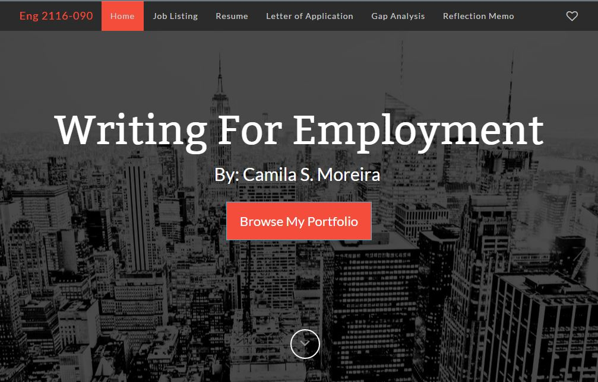
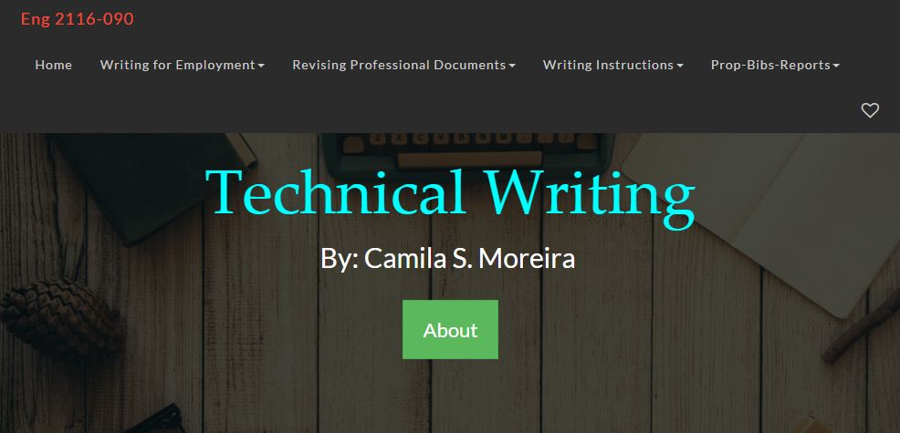

Revising a Professional Document
Article Chosen

I had to make many changes to website in order to post all of my assignments. One line at a time, I decided to code the website from scratch which took alot of time, but it was really fun for me to get practice on learning how to build a website.
The topic that I am choosing to revise my website will be the design principles, basic principles that will provide guidance and better readability for the reader. It will help my site to be more effective, the principles that I will be doing are alignment, chunking, contrast, and consistency. The first element that I revised was the navigation bar, I made drop down lists for each module so that under each module you can click on the assignment. The reason why I decided to make a drop down navigation bar was for the reader to easily find the assignment they were looking for without having to manually scroll down on each page to look for the section. This revision is necessary to have a website that is fluid, and easy to navigate through. My next revisions were the layout of the Writing for Employment page, I fixed the layout of each section because they were hard to read, and not aligned properly to the page. I needed to align my documents properly to the page, and make sure that each section was in its own divisor. I also decided to ‘chunk’ many of my elements on each of the pages to make sure that they are consistent throughout the site. For example I decided to make sure that the images and their captions are separated from the rest of the section to make it visually appealing and more professional looking. My final revisions for this assignment was to make sure that on each page I had a heading and subtitle for each section. I also wanted there to be a contrast between section for instance on the Writing for employment page, there are 5 sections so each section has a different ‘theme’ than the last one, to make each section more visually interesting, and increase accessibility to them.
Before
After
